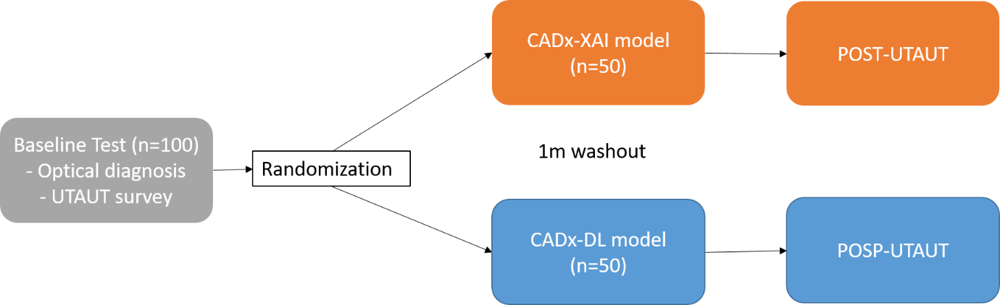
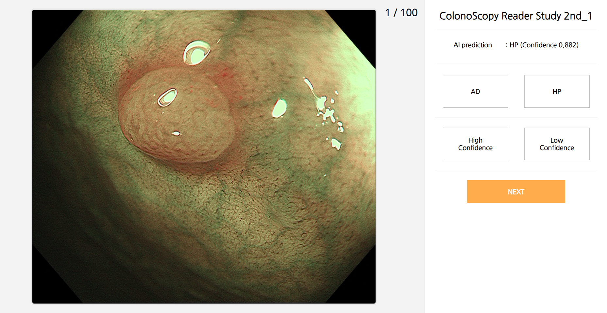
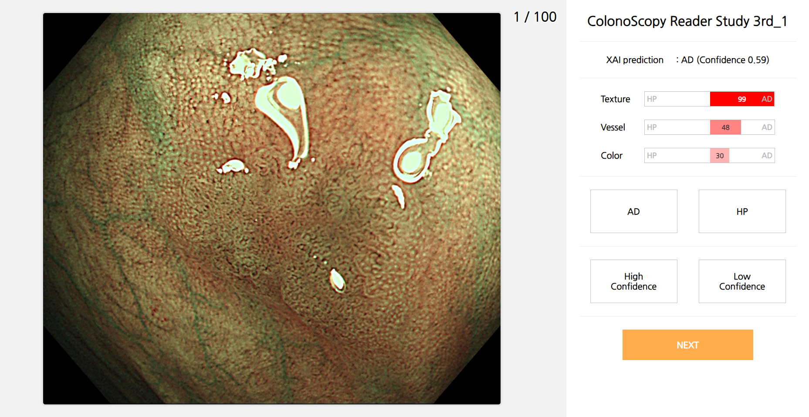

소개
- 광학 진단: 내시경에서의 광학진단은 내시경 결과로 용종의 조직학적 진단을 예측하는 것입니다. 내시경 사진만 보고, 혹은 내시경을 하는 도중에 용종의 병리 결과는 모르는 상태에서 이 용종이 adenoma인지 hyperplastic polyp인지 예측하는 것을 말합니다. 인공지능이 adenoma인지 hyperplastic polyp인지 예측하여 이용하는 의사들에게 인공지능의 판단을 알려주어 의사들이 이를 참고하여 광학진단을 하게 되는 것을 computer-aided diagnosis, CADx라고 합니다.
- 여러 전임상 연구들에서 대장용종의 광학진단 인공지능(computer-aided diagnosis-deep learning, CADx-DL)의 성능은 비교적 높은 정확도를 달성하였으나, 이를 실제 임상에서 CADx-DL을 이용하는 의사들의 광학적 진단의 정확도 향상에 대한 효과는 불확실합니다. 그 이유를 인공지능 추론과정의 블랙박스로 결론 도출 과정에 대한 설명이 부재하며 인공지능 판단에 대한 신뢰도의 불확실성 때문으로 추측하여 기존의 광학적 진단에 더불어 설명가능한 인공지능(CADx- eXplainable AI, XAI)의 효과를 확인하고자 합니다. 또한 CADx에 대한 이용의도를 통합기술수용 모델 (Unified theory of acceptance and use of technology, UTAUT) 을 적용하여 설문조사를 통하여 확인하고자 하며 CADx-DL이나 CADx-XAI 사용 전후의 변화를 확인하고자 합니다.
- 대장용종 광학진단에 대한 임상적 설명은 NICE classification에 근거하여 Texture, Vessel, Color 각각이 adenoma에 가까운지 hyperplastic polyp에 가까운지 인공지능으로 분석한 결과를 보여줍니다.
- Pre-UTAUT 설문조사 후 CADx의 도움 없이 용종 이미지에 대한 선종 여부를 판단하고 그 성적에 따라 stratified randomization을 시행하여 1) CADx-XAI를 사용하는 그룹과 2) CADx-DL을 사용하는 그룹으로 나눕니다. 1개월의 washout period를 거친 후 1) 그룹은 CADx-XAI의 도움을 받아 같은 용종 이미지에 대한 선종 여부를 판단하고 2) 그룹은 CADx-DL의 도움을 받아 같은 용종 이미지에 대한 선종 여부를 판단하게 됩니다. 이 후 마지막으로 Post-UTAUT 설문조사를 하게 됩니다.

- 핸드폰이나 아이패드가 아닌 노트북이나 데스크탑의 고화질 화면에서 test 부탁드립니다.
- 중간 저장이 안되기 때문에 중간에 창을 실수로 끄거나 인터넷 연결이 끊기면 백업이 불가한 문제가 있습니다.
진단명 선택과 고확신의 개념
- 테스트의 용종은 NBI 정지이미지로 총 200개의 문항입니다. (100문항씩 2회에 나누어 연속으로진행하게 됩니다. 대략 15-20분정도 소요)
- Adenoma와 Hyperplastic polyp 중에 선택하게 됩니다. (Sessile serrated lesion은 없음)
- 중요: 대장용종의 광학적 진단에 큰 고민 없이 확실하게 Adenoma나 Hyperplastic polyp로 생각하는 경우에는 High confidence를 선택해 주십시오. 진단이 틀릴 가능성이 있다고 생각하는 경우나, 진단이 마음속에서 혼동이 되는 경우에는 low confidence를 선택하면 됩니다.
- 각 이미지를 보신 후 용종의 조직타입 최종 진단에 도달하는 시간이 함께 측정됩니다.
- 진단명을 클릭 후 NEXT 버튼을 누르면 다음문제로 이동됩니다.
TEST 모듈과 방식
Test 1: Baseline test
참여자 모두가 인공지능 없이 200문항의 용종에 대한 조직타입과 확신도를 선택하면 됩니다.
이후 결과를 종합하고 한달 이후 계층화 randomization으로 일반 DL 그룹과 XAI 그룹으로 절반씩 나누어 두 번째 인공지능 보조 광학진단을 시행합니다.
Test 2-1: DL group (black box model)
1st test 이후 1달 이후에 DL그룹으로 배정된 참가자는 인공지능이 판단한 광학 진단과 확신도가 선택지 윗부분에 나타나게 됩니다. 확신도는 0과 1 사이의 값으로 표시되며 1에 가까울수록 인공지능의 확신이 100%에 가깝다는 뜻입니다. 이를 참고하여 정답을 선택하면 됩니다. 인공지능의 판단을 받아들일지 받아들이지 않을지는 내시경 의사의 선택입니다.

Test 2-2: XAI group (explainable model)
1st test 이후 1달 이후에 XAI그룹으로 배정된 참가자는 인공지능이 판단한 광학 진단과 확신도가 선택지 윗부분에 나타나게 됩니다. NICE classification에 근거하여 Texture, vessel, color 각각이 adenoma에 가까운지 hyperplastic polyp에 가까운지 인공지능으로 분석한 결과를 보여주며, 이를 종합하여 최종적으로 0과 1 사이의 확신도를 표시하여 줍니다. 확신도의 경우 1에 가까울수록 확신이 100%에 가까움을 의미합니다. 인공지능의 판단을 받아들일지 받아들이지 않을지는 내시경 의사의 선택입니다.
